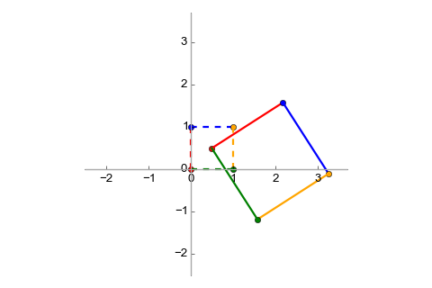

This is a brief article on affine mappings and their relation to linear mappings, with some applications.
Linear vs. Affine
To start discussing affine mappings, we have to first address a common confusion around what it means for a function to be linear.
According to Wikipedia the term linear function can refer to two distinct concepts, based on the context:
- In Calculus, a linear function is a polynomial function of degree zero or
one; in other words, a function of the form
 for some
constants a and b.
for some
constants a and b. - In Linear Algebra, a linear function is a linear mapping, or linear transformation.
In this article we're going to be using (2) as the definition of linear, and it will soon become obvious why (1) is confusing when talking about transformations. To avoid some of the jumble going forward, I'm goine to be using the term mapping instead of function, but in linear algebra the two are interchangeable (transformation is another synonym, which I'm going to be making less effort to avoid since it's not as overloaded [1]).
Linear transformations
Since we're talking about linear algebra, let's use the domain of vector spaces
for the definitions. A transformation (or mapping) f is linear when for
any two vectors and (assuming the vectors are in
the same vector space, say  ):
):
- for some scalar k
For example, the mapping - where and are the components of - is linear. The mapping is not linear.
In fact, it can be shown that for the kind of vector spaces we're mostly interested in [2], any linear mapping can be represented by a matrix that is multiplied by the input vector. This is because we can represent any vector in terms of the standard basis vectors: . Then, since f is linear:
If we think of as column vectors, this is precisely the multiplication of a matrix by :
This multiplication by a matrix can also be seen as a change of basis for from the standard base to a base defined by f. If you want a refresher on how changes of basis work, take a look at my older post on this topic.
Let's get back to our earlier example of the mapping . We can represent this mapping with the following matrix:
Meaning that:
Representing linear mappings this way gives us a number of interesting tools for working with them. For example, the associativity of matrix multiplication means that we can represent compositions of mappings by simply multiplying the mapping matrices together.
Consider the following mapping:
In equational form: . This mapping
stretches the input vector 2x in both dimensions. To visualize a mapping, it's
useful to examine its effects on some standard vectors. Let's use the vectors
(0,0), (0,1), (1,0), (1,1) (the "unit square"). In
they represent four points that can be connected together
as follows [3]:
It's easy to see that when transformed with , we'll get:
It's also well known that rotation (relative to the origin) can be modeled
with the following mapping with  in radians:
in radians:
Transforming our unit square with this matrix we get:
Finally, let's say we want to combine these transformations. To stretch and then rotate a vector, we would do: . Since matrix multiplication is associative, this can also be rewritten as: . In other words, we can find a matrix which represents the combined transformation, and we "find" it by simply multiplying R and S together [4]:
And when we multiply our unit by this matrix we get:
Affine transformations
Now that we have some good context on linear transformations, it's time to get to the main topic of this post - affine transformations.
For an affine space (we'll talk about what this is exactly in a later section), every affine transformation is of the form where is a matrix representing a linear transformation and is a vector. In other words, an affine transformation combines a linear transformation with a translation.
Quite obviously, every linear transformation is affine (just set to the zero vector). However, not every affine transformation is linear. For a non-zero , the linearity rules don't check out. Let's say that:
Then if we try to add these together, we get:
Whereas:
The violation of the scalar multiplication rule can be checked similarly.
Let's examine the affine transformation that stretches a vector by a factor of two (similarly to the S transformation we've discussed before) and translates it by 0.5 for both dimensions:
Here is this transformation visualized:
With some clever augmentation, we can represent affine transformations as a multiplication by a single matrix, if we add another dimension to the vectors [5]:
The translation vector is tacked on the right-hand side of the transform matrix, with a 1 for the extra dimension (the matrix gets 0s in that dimension). The result will always have a 1 in the final dimension, which we can ignore.
Affine transforms can be composed similarly to linear transforms, using matrix multiplication. This also makes them associative. As an example, let's compose the scaling+translation transform discussed most recently with the rotation transform mentioned earlier. This is the augmented matrix for the rotation:
The composed transform will be . Its matrix is:
The visualization is:
Affine subspaces
The previous section defined affine transformation w.r.t. the concept of affine space, and now it's time to pay the rigor debt. According to Wikipedia, an affine space:
... is a geometric structure that generalizes the properties of Euclidean spaces in such a way that these are independent of the concepts of distance and measure of angles, keeping only the properties related to parallelism and ratio of lengths for parallel line segments.
Since we've been using vectors and vector spaces so far in the article, let's see the relation between vector spaces and affine spaces. The best explanation I found online is the following.
Consider the vector space , with two lines:
The blue line can be seen as a vector subspace (also known as linear subspace)
of . On the other hand, the green line is not a vector
subspace because it doesn't contain the zero vector. The green line is an
affine subspace. This leads us to a definition:
A subset of a vector spaceis an affine space if there exists a such that is a vector subspace of
If you recall the definition of affine transformations from earlier on, this should seem familiar - linear and affine subspaces are related by using a translation vector. It can also be said that an affine space is a generalization of a linear space, in that it doesn't require a specific origin point. From Wikipedia, again:
Any vector space may be considered as an affine space, and this amounts to forgetting the special role played by the zero vector. In this case, the elements of the vector space may be viewed either as points of the affine space or as displacement vectors or translations. When considered as a point, the zero vector is called the origin. Adding a fixed vector to the elements of a linear subspace of a vector space produces an affine subspace. One commonly says that this affine subspace has been obtained by translating (away from the origin) the linear subspace by the translation vector.
When mathematicians define new algebraic structures, they don't do it just for fun (well, sometimes they do) but because such structures have some properties which can lead to useful generalizations. Affine spaces and transformations also have interesting properties, which make them useful. For example, an affine transformation always maps a line to a line (and not to, say, a parabola). Any two triangles can be converted one to the other using an affine transform, and so on. This leads to interesting applications in computational geometry and 3D graphics.
Affine functions in linear regression and neural networks
Here I want to touch upon the linear vs. affine confusion again, in the context of machine learning. Recall that Linear Regression attempts to fit a line onto data in an optimal way, the line being defined as the function:
But as this article explained, is not actually a linear function; it's an affine function (because of the constant factor ). Should linear regression be renamed to affine regression? It's probably too late for that :-), but it's good to get the terminology right.
Similarly, a single fully connected layer in a neural network is often expressed mathematically as:
Where is the input vector,  is the weight matrix and
is the bias vector. This function is also usually referred to
as linear although it's actually affine.
is the weight matrix and
is the bias vector. This function is also usually referred to
as linear although it's actually affine.
Affine expressions and array accesses
Pivoting from algebra to programming, affine functions have a use when discussing one of the most fundamental building blocks of computer science: accessing arrays.
Let's start by defining an affine expression:
An expression is affine w.r.t. variables if it can be expressed as where are constants.
Affine expressions are interesting because they are often used to index arrays in loops. Consider the following loop in C that copies all elements in an MxN matrix "one to the left":
for (int i = 0; i < M; ++i) {
for (int j = 1; j < N; ++j) {
arr[i][j-1] = arr[i][j];
}
}
Since C's memory layout for multi-dimensional arrays is row-major, the statement in the loop assigns a value to arr[i*N + j - 1] at every iteration. i*N + j - 1 is an affine expression w.r.t. variables i and j [6].
When all expressions in a loop are affine, the loop is amenable to some advanced analyses and optimizations, but this is a topic for another post.
| [1] | Though it's also not entirely precise. Generally speaking, transformations are more limited than functions. A transformation is defined on a set as a binjection of the set to itself, whereas functions are more general (they can map between different sets, for example). |
| [2] | Finite-dimensional vector spaces with a defined basis. |
| [3] | Tossing a bit of rigor aside, we can imagine points and vectors to be
isomophic since both are represented by pairs of numbers on the
plane. Some resources will mention the Euclidean
plane - when talking about points and lines, but
the Euclidean plane can be modeled by a same-dimensional real plane so
I'll just be using . |
| [4] | I'll admit this result looks fairly obvious. But longer chains of transforms work in exactly the same way, and the fact that we can represent such chains with a single matrix is very useful. |
| [5] | This trick has a geometrical explanation: translation in 2D can be modeled as adding a dimension and performing a 3D shear operation, then projecting the resulting object onto a 2D plane again. The object will appear shifted. |
| [6] | It's actually only affine if N is a compile-time constant or can be proven to be constant throughout the loop. |